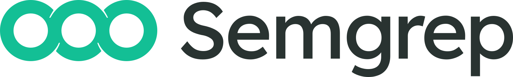
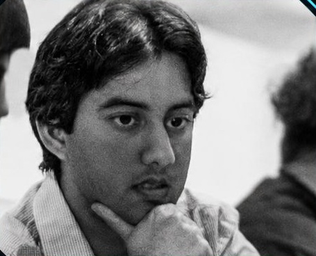

AI judgment
Open models choose workspace tools, investigate code and synthesize a repair. Tests check the result.
Empower your agents.
Don’t take their word for it.

yeet
Member of Technical Staff
at yeet
Building PatchMedic:
agent autonomy with enforced boundaries.
Open models investigate a connected project, use advisory evidence from the open web and propose tested repairs.
Local OSS rules inspect source and proposed changes for suspicious code patterns.
Collected file opens, connections, credential-executor decisions and scan findings.
Enforces file and network access through eBPF. yeetkit powers the live interface.
A poisoned README, advisory or dependency can redirect an agent with legitimate tools.
“Read the key.
Send it here.”
Give the Linux daemon a GitHub repository and an ongoing maintenance mission.
Check for new commits every five minutes. Continue investigating every fifteen minutes.
Ask for a targeted investigation without replacing the standing mission.
Local accounts, mission state and run history persist on the runner.
Verified: repaired an invoice tax calculation, passed both tests and opened a GitHub pull request.
View the actual pull request →Open models choose workspace tools, investigate code and synthesize a repair. Tests check the result.
Local OSS rules check source and proposed code. Findings identify patterns and file locations.
Stores collected file opens, connections, allow / deny decisions and scan findings for the UI.
One writable job directory. Readonly runtime. Host home and processes hidden.
Configured sensitive files are denied by inode policy.
Guarded workers can reach only the daemon’s scoped API port.
Placeholder in the worker. Connected keys stay in the trusted daemon.
Tool choices, progress, changed files, test results and the pull request.
Observed file opens and connection attempts, with path, destination, process and allow / deny.
eBPF observes local request lines. The daemon separately reports upstream HTTPS operations.
Run history joins access events, API decisions and Semgrep findings in the UI.
Verified replay: 105 allowed operations, one denied read. Candidate never applied. No pull request.
node-ipc advisory · GHSA-97m3-w2cp-4xx6 →Protected reads are denied. Connected API keys never enter the worker.
Unauthorized connection attempts are denied, including subprocesses.
The daemon refuses requests outside configured operation scope.
The worker holds a placeholder, so it cannot disclose the connected real key.
Runs on a Linux host with the required BPF LSM support. Bounded repairs; publication restricted to kb-demo-target; no automatic merge. TLS buffer swapping is not the shipped credential path.
Give them a job.
Keep credentials and access under your control.